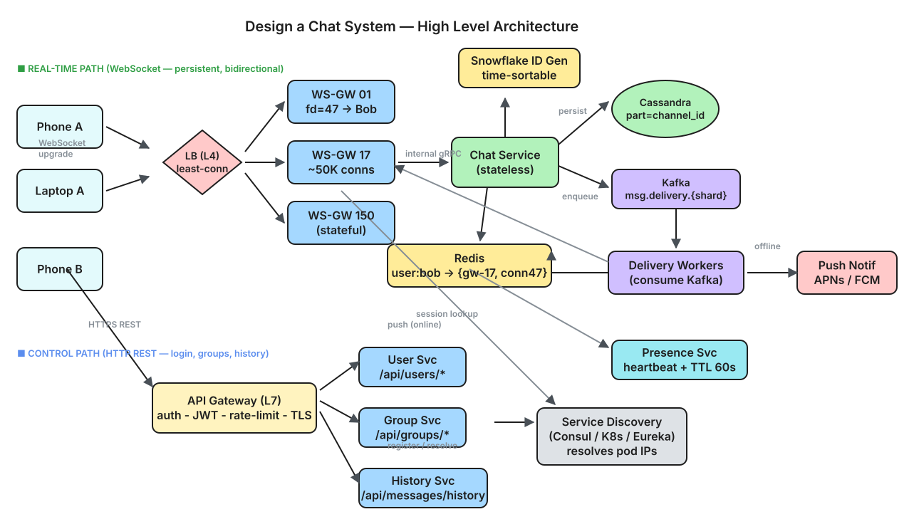

50M DAU, 1:1 + group messaging (max 100), multi-device sync, online presence, push notifications — like Facebook Messenger at scale.
1 char = 1 B (UTF-8 ASCII). 1 KB = 10³ B.| Option | How | Verdict |
|---|---|---|
| HTTP Polling | Client asks "new messages?" every N seconds. | ❌ Wasteful at scale (7.5M clients × every 3s = 2.5M QPS of mostly-empty responses). Latency = N/2 avg. |
| HTTP Long Polling | Client holds connection open until server has data or timeout. | ⚠️ Better but still one-directional. Hard to push server-initiated events (presence, typing). |
| WebSocket | Persistent full-duplex TCP connection. Server pushes instantly. | ✅ Best fit. Bidirectional, low latency (~RTT), efficient for presence + messages. 10 KB RAM per connection. |
═══════════════════ MESSAGE PATH (hot, p99 < 500 ms) ═══════════════════
Phone A ──┐ ┌── Phone B
Laptop A ─┤ WebSocket (persistent, bidirectional) ├── Tablet B
▼ ▼
┌──────────────────────────────────────────────────────┐
│ WebSocket Gateway (stateful) │
│ - Maintains user → {connection_id, device, pod} map │
│ - Registers sessions in Redis on connect │
│ - Heartbeat every 30s (presence) │
│ - TLS termination │
└────────────┬─────────────────────────┬───────────────┘
│ │
▼ ▼
┌──────────────────┐ ┌────────────────────────┐
│ Chat Service │ │ Redis │
│ (stateless) │ │ - session registry │
│ - validate msg │ │ user:{id}:sessions │
│ - generate ID │◄────────►│ - presence (TTL 60s) │
│ - persist │ │ - unread counts │
│ - enqueue │ └────────────────────────┘
└───────┬──────────┘
│
▼
┌──────────────────┐
│ Kafka │ topic: msg.delivery.{shard}
│ (durable queue) │ partitioned by recipient_id
└───────┬──────────┘
│
▼
┌──────────────────────────────────────────────────────┐
│ Delivery Workers (consume Kafka) │
│ For each recipient: │
│ 1. Lookup sessions in Redis │
│ 2. If ONLINE → push via Gateway WebSocket │
│ 3. If OFFLINE → enqueue to Push Notification Svc │
│ 4. Increment unread_count in Redis │
└──────────────────────────────────────────────────────┘
═══════════════════ STORAGE LAYER ═══════════════════
┌──────────────────┐ ┌──────────────────┐
│ Cassandra │ │ MySQL / Spanner │
│ (messages) │ │ (users, groups, │
│ partition = │ │ contacts, ACL) │
│ channel_id │ │ │
└──────────────────┘ └──────────────────┘
═══════════════════ AUXILIARY ═══════════════════
┌──────────────────┐ ┌──────────────────┐ ┌──────────────────┐
│ Presence Service │ │ Push Notification │ │ Snowflake ID Gen │
│ heartbeat + TTL │ │ APNs / FCM │ │ time-sortable │
└──────────────────┘ └──────────────────┘ └──────────────────┘

⬇ Download Interactive Diagram (.excalidraw) ↗ Open in Excalidraw
msg_id via Snowflake (time-sortable 64-bit ID).messages table (partition = channel_id).msg.delivery.{hash(bob_id)}.user:bob:sessions.unread_count for Bob in Redis.msg_id, persists once (partition = group_channel_id).Alice has 3 devices (phone, laptop, tablet). All connected via separate WebSockets to potentially different Gateway pods.
user:alice:sessions = {
"conn_abc": { device: "iphone", gateway_pod: "gw-17", connected_at: 1717000000 },
"conn_def": { device: "laptop", gateway_pod: "gw-42", connected_at: 1717000100 },
"conn_ghi": { device: "tablet", gateway_pod: "gw-08", connected_at: 1717000200 }
}
When a message arrives for Alice, the Delivery Worker pushes to all 3 connections. Each device renders it.
{type:"read", channel_id, msg_id:42} to Chat Service.read_cursor(alice, channel_id) = 42.SELECT * FROM messages WHERE channel_id = ? AND msg_id > ? LIMIT 50.
┌──────────────────────────────────────────────────────────┐
│ PRESENCE MODEL │
│ │
│ Storage: Redis key with TTL │
│ │
│ Key: presence:{user_id} │
│ Value: { status: "online", last_seen: 1717000000 } │
│ TTL: 60 seconds │
│ │
│ ───────────────────────────────────────────────────── │
│ │
│ HEARTBEAT FLOW: │
│ │
│ Client → Gateway → Presence Service → Redis │
│ (every 30s) reset TTL to 60s │
│ │
│ If no heartbeat for 60s → key expires → user "offline" │
│ │
│ ───────────────────────────────────────────────────── │
│ │
│ WHO GETS PRESENCE UPDATES? │
│ │
│ NOT all 500 friends (thundering herd problem). │
│ Only users with an ACTIVE CHAT WINDOW open with you. │
│ │
│ Mechanism: Pub/Sub channel per user. │
│ Subscribe: presence:{user_id} │
│ Only people currently chatting with you subscribe. │
│ │
│ Everyone else sees "last seen 5 min ago" on-demand │
│ (lazy read from Redis when they open the chat). │
└──────────────────────────────────────────────────────────┘
{ title: "Alice", body: "Hey Bob", badge: unread_count }.push_tokens(user_id, device_id, platform, token, updated_at).| Table | Partition Key | Clustering Key | Columns | Purpose |
|---|---|---|---|---|
messages | channel_id | msg_id DESC | sender_id, content, type, created_at | All messages in a conversation, time-sorted |
user_channels | user_id | last_msg_id DESC | channel_id, unread_count, last_msg_preview | User's inbox — "recent chats" screen |
| Table | Key | Columns | Purpose |
|---|---|---|---|
users | user_id | name, avatar, created_at | User profiles |
groups | group_id | name, avatar, owner_id, created_at | Group metadata |
group_members | (group_id, user_id) | role, joined_at | Membership lookup for fan-out |
contacts | (user_id, contact_id) | nickname, blocked | Friend/contact list |
push_tokens | (user_id, device_id) | platform, token, updated_at | APNs/FCM tokens |
64-bit Snowflake ID: ┌────────────────────┬──────────┬────────────┐ │ 41 bits timestamp │ 10 bits │ 12 bits │ │ (ms since epoch) │ machine │ sequence │ │ ~69 years range │ 1024 │ 4096/ms │ └────────────────────┴──────────┴────────────┘ Properties: - Time-sortable (older messages have smaller IDs) - Globally unique (no collisions across machines) - 4M IDs/sec per machine → far exceeds 70K msg/s
| Failure | Impact | Mitigation |
|---|---|---|
| Gateway pod crash | ~50K connections drop | Clients auto-reconnect (exponential backoff) to another pod. Fetch missed messages via sync cursor. |
| Chat Service crash | Inflight messages not acked | Client retries with idempotency key (msg_id generated client-side or dedup on server). Kafka already has the event if it was published. |
| Kafka broker down | Delivery fan-out stalls | Multi-broker replication (RF=3). Messages already persisted in Cassandra — delivery resumes when Kafka recovers. |
| Cassandra node down | Writes to that partition fail | RF=3 + quorum writes → 1 node down is tolerable. Gossip protocol reroutes. |
| Redis crash (presence) | All users appear offline briefly | Heartbeats rebuild state within 30s. Sessions re-register on next Gateway heartbeat. |
| Network partition (user offline) | Messages not delivered in real-time | Messages stored in Cassandra; delivered on reconnect via sync cursor. Push notification fires for offline path. |
| Duplicate delivery (Kafka at-least-once) | User sees message twice | Client deduplicates by msg_id before rendering. Idempotent. |
| Layer | Instances | Per-instance | Total |
|---|---|---|---|
| WebSocket Gateway | ~150 pods | 50K connections | 7.5M concurrent connections |
| Chat Service | ~30 pods | 2.5K msg/s | 70K msg/s |
| Kafka | ~20 brokers | 5K msg/s | 100K deliveries/s |
| Delivery Workers | ~50 pods | 2K deliveries/s | 100K deliveries/s |
| Cassandra (messages) | ~60 nodes, RF=3 | — | ~150 TB/year |
| Redis (session + presence) | ~10 shards × 2 replicas | — | 7.5M session entries |
| Push Notification Service | ~10 pods | — | handles offline spikes |
channel_id so one conversation's messages live on one Cassandra partition for fast sequential reads.
Full-duplex TCP protocol (RFC 6455) for persistent bidirectional communication — server pushes instantly without polling.
64-bit time-sortable unique ID: 41 bits timestamp + 10 bits machine + 12 bits sequence. ~4M IDs/sec/machine.
When a message is sent, immediately create delivery events for each recipient. Good for small groups; expensive for broadcast (1M followers → use fan-out on read).
Unique identifier for a conversation. For 1:1: hash(sorted(userA, userB)). For groups: the group_id.
Redis hash mapping user_id → list of active WebSocket connections (device, gateway_pod, connected_at). Enables multi-device delivery.
Client pings every 30s; Redis key TTL is 60s. No ping for 60s → key expires → offline. No DB writes needed.
Per-device last_received_msg_id. On reconnect, fetch all messages after cursor to catch up.
Client deduplicates by msg_id. At-least-once from Kafka is safe because rendering the same message twice is prevented client-side.
Apple Push Notification Service / Firebase Cloud Messaging — platform-specific push notification gateways for iOS/Android.
End-to-end encryption where server relays only ciphertext. Loses server-side search and content moderation.
Client holds HTTP connection open until data arrives. Simpler than WebSocket but unidirectional and less efficient for frequent updates.
All rows with the same partition key live on the same node. Messages partitioned by channel_id → fast sequential reads for chat history.